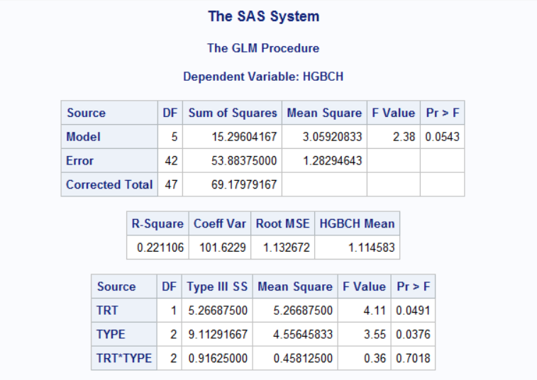
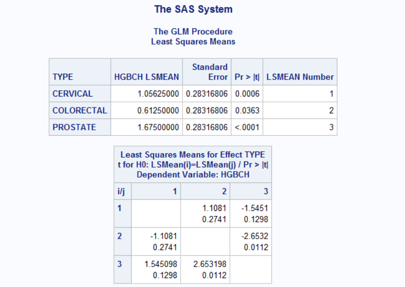
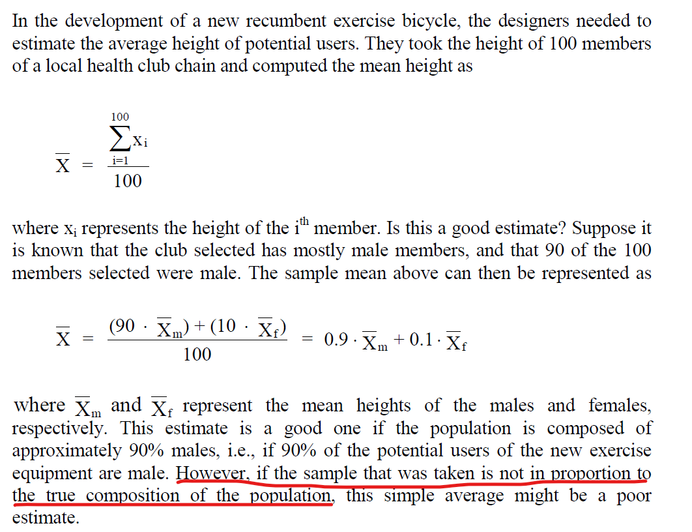
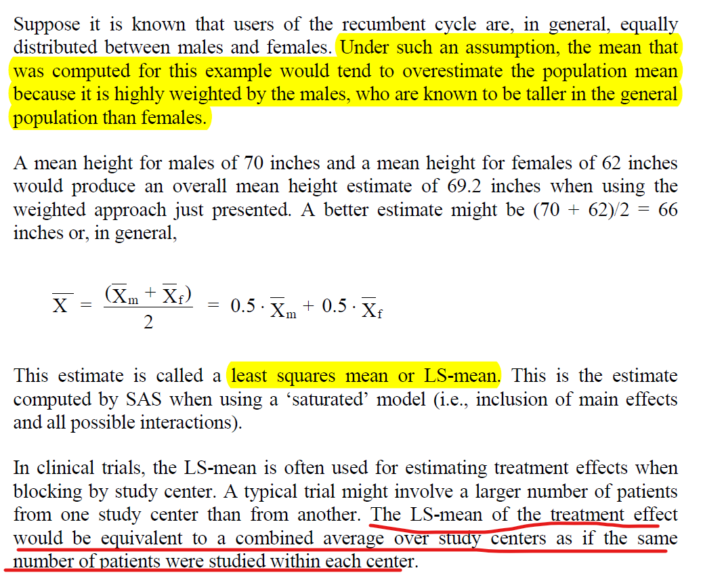
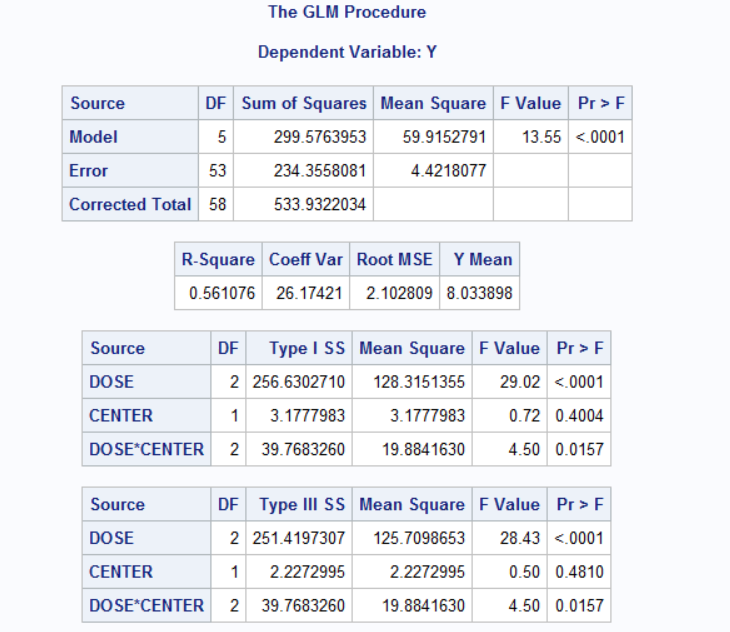
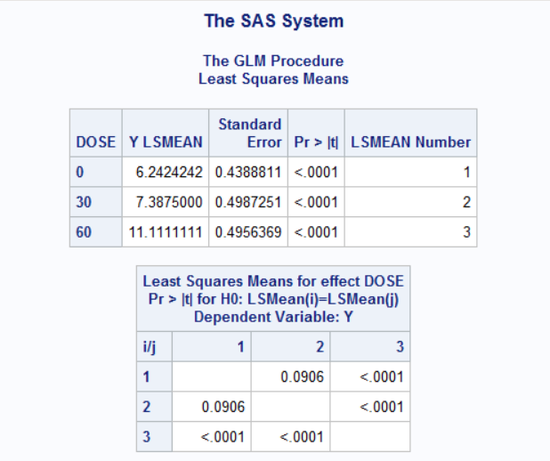
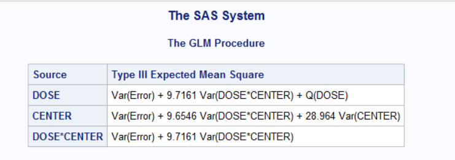

Chapter 4 Two-Way ANOVA
The two-way ANOVA is a method for simultaneously analyzing two factors that affect a response.
4.1 SAS example
data hgbds;
input trt $ type $ patno hgbch @@;
datalines;
ACT C 1 1.7 ACT C 3 -0.2 ACT C 6 1.7
ACT C 7 2.3 ACT C 10 2.7 ACT C 12 0.4
ACT C 13 1.3 ACT C 15 0.6 ACT P 22 2.7
ACT P 24 1.6 ACT P 26 2.5 ACT P 28 0.5
ACT P 29 2.6 ACT P 31 3.7 ACT P 34 2.7
ACT P 36 1.3 ACT R 42 -0.3 ACT R 45 1.9
ACT R 46 1.7 ACT R 47 0.5 ACT R 49 2.1
ACT R 51 -0.4 ACT R 52 0.1 ACT R 54 1.0
PBO C 2 2.3 PBO C 4 1.2 PBO C 5 -0.6
PBO C 8 1.3 PBO C 9 -1.1 PBO C 11 1.6
PBO C 14 -0.2 PBO C 16 1.9 PBO P 21 0.6
PBO P 23 1.7 PBO P 25 0.8 PBO P 27 1.7
PBO P 30 1.4 PBO P 32 0.7 PBO P 33 0.8
PBO P 35 1.5 PBO R 41 1.6 PBO R 43 -2.2
PBO R 44 1.9 PBO R 48 -1.6 PBO R 50 0.8
PBO R 53 -0.9 PBO R 55 1.5 PBO R 56 2.1
;
run;
proc format;
value $typfmt 'C' = 'CERVICAL '
'P' = 'PROSTATE '
'R' = 'COLORECTAL' ;
run;
proc glm data=hgbds;
class trt type;
model hgbch = trt type trt*type /ss3;
lsmeans type / pdiff stderr t lines;
format type $typfmt.;
run;
quit;4.2 Sample Result

4.2.1 Some notes
- There is significant difference in treatment effect (p=0.0491)
- There is also significant difference among Cancer Types (p=0.0376), but because there are more than 2 levels of this effect, further analysis are needed to determine where the differences exist.
To perform pairwise t-tests for multiple comparisons, we can include the lsmeans statment with T option after the model statment.
- mean hemoglobin response differs significantly between the PROSTATE and COLORECTAL Cancer Types

4.3 Least Squares Mean (LS-mean)

4.4 Unbalanced Two-way ANOVA
data memry;
input dose $ center $ y @@;
datalines;
0 A 6 0 A 5 0 A 6 0 A 8 0 A 3
0 A 4 0 A 5 0 A 6 0 A 5 0 A 5
0 A 7 0 A 8 0 B 7 0 B 4 0 B 7
0 B 6 0 B 7 0 B 8 0 B 5 0 B 9
0 B 11 0 B 4 0 B 7 30 A 8 30 A 12
30 A 7 30 A 8 30 A 6 30 A 9 30 A 6
30 A 11 30 B 5 30 B 6 30 B 6 30 B 5
30 B 3 30 B 8 30 B 6 30 B 9 30 B 11
30 B 5 60 A 11 60 A 7 60 A 7 60 A 11
60 A 9 60 A 10 60 A 12 60 A 9 60 A 15
60 B 9 60 B 12 60 B 13 60 B 9 60 B 13
60 B 12 60 B 14 60 B 15 60 B 12
;
run;
proc glm data=memry;
class dose center;
model y=dose center dose*center;
lsmeans dose/pdiff stderr;
run;
quit;
4.5 Some notes
From the SAS outputs, we can conclude that a difference exists between the 60 mg dose and the placebo, but the overall efficacy of the 30 mg dose is in question.
4.5.1 “Mixed” effects
There are two types of effects that can be used in an ANOVA model, the “fixed” effect and “random” effect.
- Fixed: pre-specified levels, with the goal of comparing specific levels of that effect, e.g. treatment group
- Random: blocking factor in a two-way ANOVA can be either fixed or random. e.g. Study Center is frequently considered a random effect since the centers often represent a sample from a large number of centers available to conduct the study.
/* study center as a random effect */
proc glm data=memry;
class dose center;
model y=dose center dose*center;
random center dose*center;
test h=dose e=dose*center;
lsmeans dose /pdiff stderr;
run;
quit;
4.5.2 Using Proc Mixed
When using SAS, Proc Mixed is preferable to Proc GLM in many situations.
proc mixed data=memry;
class dose center;
model y=dose center dose*center;
lsmeans dose*center /diff;
run;
quit;
/*study center is random effect*/
/*this mixed model analysis enables us to make inferences about the Dose effect that
applies to the entire population without concern for the levels of random effects*/
proc mixed data=memry;
class dose center;
model y=dose; /*study center not included here*/
random center dose*center;
lsmeans dose /diff;
run;
quit;In SAS, Type III corresponds to the method of weighted squares of means and is often the method of choice for the analysis of clinical data.